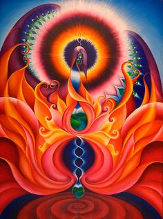

26 Золотая лихорадка
Услышала интересную мысль: не важно где копать. Важно именно копать в одном месте, тогда яма будет глубокая и возможно ты найдешь золото. Те, кто стоит и философствует над землей или копают много маленьких ямок по всюду - до золота не добираются. Из времен золотой лихорадки.
Я решила "копать" в мире снов. Хочу открыть ларец пандоры. Чувстувую зов, который оттуда доносится. Ощущаю потребность раскрыть тайну, которая преследует меня с детства: кто они, те, кто приходят в мои сны? Мир снов - это бездонная пропасть. А то, что ты из нее зачерпнешь - зависит от тебя. Я даже встречала в снах реальных людей.
Однажды в осознанном сне я повстречала маму, поговорила с ней, потом прыгнула в окошко, поскольку во сне это самый удобный способ передвижения - зачем тратить время на лифт? Наутро мама мне рассказала, что видела меня во сне прыгнувшей в окно и летевшей, описала мне свой испуг.
Возникла мысль мысль: мы ответственны за свои сны. За все, что мы совершаем в снах, нам придется ответить в реальности. Сны тоже участвуют при создании нашей кармы.... мы рождаемся, машина генерации кармы запускается... ее не остановить... и даже в снах, наедине с собой, когда нас никто не видит (а вот это уже под вопросом!) наша карма продолжает твориться. Сны, будь то осознанные или нет - это не место, где можно безобразничать - мы за них в ответе. И за тех людей, которых мы встречаем, даже если нам кажется, что это миражи
Что там, за гранью мира снов? Параллельные реальности, всемирное богатство - хранилище информации в ноосфере, хроники Акаши - если туда заглянуть, можно прочесть тысячи ненаписанных книг, услышать несыгранные мелодии, увидеть невиданные картины. Бездонный колодец, из которого можно черпать знание.
Я приоткрыла ящик пандоры. Чувствую, что это опасная игра. Это водоворот. Но чтобы пройти водоворот, нужно нырнуть в него и пройти до конца, затем выплыть по дну... иначе не выбраться живьем из бурного потока. Как пишут в некоторых айтишных инструкциях - не делайте этого до того момента, когда у вас не будет четкого понимания, зачем вам это нужно. А у меня оно появилось? Надеюсь, что светлая цель меня проведет сквозь все дебри и я все же выйду на свет. Надеюсь, мне поможет та "связь", которую я ощущаю. Путь опасный, я все понимаю, я знаю, что это очень неустойчивая дорога и возвращаются не все. Но я хочу найти. Многие ищут: кто-то нирвану, избавление от страданий. А я ищу доступ к великому хранилищу информации в ноосфере. Если только Вернадский и восточные товарищи были правы... Я хочу понять. Я хочу помогать людям. Я очень стараюсь... и надеюсь... и продолжу путь.